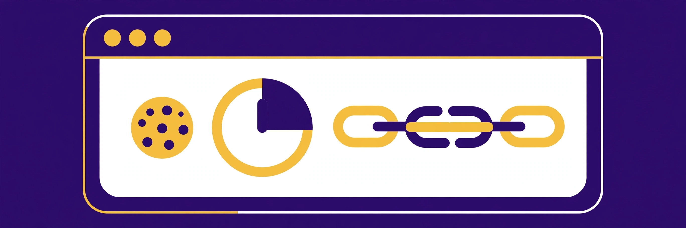

How AI affiliate cookie windows and attribution actually work

Every affiliate commission starts with an invisible race. A reader clicks a referral link, a small file called a cookie is stored in their browser, and a countdown starts. If that reader buys before the countdown ends — and nobody else’s link replaces yours in the meantime — the commission is yours. If either condition fails, it is not. The countdown length is the cookie window (also called the attribution window or referral window), and the replacement rule is the attribution model. Together they decide whether months of content work pays out or quietly evaporates, and across the AI programs in this directory they range from a strict 14 days to a full 365 days.
This guide explains the mechanics first, then compares the actual windows and models published in the official terms of the programs listed on this site, all re-checked on 2026-10-13. It ends with a framework for matching a program’s window to the kind of content you publish.
How affiliate tracking actually works, step by step
The sequence is the same almost everywhere:
- The click. A reader follows your unique referral link. The program’s tracking system records the click and stores a cookie in the reader’s browser identifying you as the referrer.
- The window opens. From that moment, a fixed number of days starts counting down. Any qualifying action inside the window can be credited to you.
- The qualifying action. Depending on the program, credit may require a purchase, a registration, or both in sequence. This distinction matters more than most roundups admit, as the Synthesia example below shows.
- The attribution check. If the reader clicked several affiliates’ links, the program’s attribution model decides which one wins. The dominant model in this directory is last-click: the most recent link clicked before the qualifying action takes the whole commission.
- The commission posts. The sale is recorded against your account, usually subject to a separate verification or hold period before it becomes payable — a different clock again, covered in this site’s payout guide.
Two failure modes hide inside that tidy sequence. First, the cookie lives in one browser on one device: a reader who clicks on a phone and buys later on a laptop may never be matched to you unless the program anchors credit to an account registration. Second, the cookie can be blocked, cleared, or expired by privacy settings. Synthesia’s official terms state this plainly: if the customer does not allow cookies, the company has no means of tracking the referral, and the customer cannot count as a qualified customer. Pabbly’s terms make the same point from the other side, noting that tracking fails when a browser does not accept cookies, unless an exclusive referral coupon is used instead.
Cookie window vs attribution model: two different rules
Promoters routinely conflate these, and the confusion is expensive. The window answers “how long does my click stay eligible?” The model answers “if several eligible clicks exist, whose wins?” A 90-day window with last-click attribution can pay you less than a 30-day window on a program your audience buys from directly, because every intervening click by a coupon site, a review round-up, or another creator resets the winner.
HeyGen’s official affiliate page describes its model in exactly these terms: a 30-day last-click window in which the most recent referral link clicked before sign-up receives the credit. Writesonic states a 60-day cookie with last-click attribution, and adds a practical workaround for audio and event audiences: custom tracking coupons, so a listener who hears a code on a podcast can still be credited without a clickable link surviving the journey. Pabbly works the same way at the other end of the window scale, pairing its last-click model with an exclusive-coupon fallback when cookies are not accepted.
The verified windows, side by side
Every figure below comes from the program’s official affiliate page or terms, fetched on 2026-10-13. Windows describe the period after a click during which a qualifying action can be credited.
| Program | Window | Attribution / qualifying rule |
|---|---|---|
| Jasper | 14 days | Purchase must occur within 14 days of the first click; where multiple affiliate cookies exist, the most recently acquired cookie generally determines credit |
| HeyGen | 30 days | Last-click: the most recent link clicked before sign-up receives credit |
| Tidio | 30 days | Cookie time stated as 30 days |
| Fliki | 30 days | Sales tracked through the unique affiliate link within the 30-day cookie period |
| Descript | 30 days | Purchase must occur within 30 days of the first click of the affiliate URL |
| Synthesia | 60 days | Registration must occur within 60 days of the click; last-clicked link wins if several were clicked |
| Frase | 60 days | Credit for any purchase within 60 days of the click |
| Writesonic | 60 days | Last-click attribution; custom tracking coupons available |
| Colossyan | 90 days | Purchases within 90 days of the first referral visit can be attributed |
| InVideo AI | 120 days | Sign-ups tracked as referrals for 120 days; free sign-ups inside the period are attributed |
| Semrush | 120 days | Cookie window stated as 120 days on the official program page |
| HubSpot | 180 days | Cookie window stated as 180 days on the official program page |
| Pabbly | 365 days | Last-click model; sale must occur within 365 days of the click |
Read the table and three patterns emerge. First, the cluster at 30 days is the consumer-creator tier: video and writing tools that people typically try and buy within a single research session or a short trial. Second, the 60-to-120-day band is where considered purchases live — SEO tools, avatar-video platforms, and marketing software that a buyer evaluates against rivals. Third, the outliers are instructive: Jasper’s 14 days is the shortest window in this directory by a wide margin, while Pabbly’s 365 days and HubSpot’s 180 days reflect products bought on business planning cycles, not impulse.
When the cookie is not the whole story: registration anchoring
Some programs split the journey in two. The click starts the clock, but it is the registration that locks in the relationship; purchases after registration are then tracked through the account rather than the browser. Synthesia is the clearest documented example here: a customer qualifies only if they register within 60 days of clicking the referral link, and commission then runs for 12 months from the first purchase. InVideo AI similarly attributes free sign-ups made inside its 120-day window to the referring affiliate, which is why its window matters even for readers who do not pay on day one.
The practical difference: on a pure-cookie program, a reader who clears cookies, switches devices, or buys in a different browser is lost to you. On a registration-anchored program, the same reader is safe once the account exists — but a reader who browses for two months before ever creating an account can still fall outside the registration deadline. Neither design is strictly better; they reward different content. Content that drives an immediate free sign-up suits anchored programs. Content that nurtures a slow, unregistered evaluation suits long pure-cookie windows like Pabbly’s.
What breaks attribution in practice
Beyond expiry, four recurring causes cost promoters commissions. A later click: under last-click rules, a coupon or cashback site visited at checkout can take the entire commission for a sale your review created. Cookie refusal: as Synthesia and Pabbly both warn, a browser that rejects cookies leaves nothing to track. Device switching: click on mobile, purchase on desktop is the classic leak, mitigated only where registration anchoring or coupon codes exist. Late purchase: Descript’s terms give the blunt arithmetic — a purchase on day 32 after a first click is not a valid purchase under its 30-day rule, however strong the referral’s influence was. Jasper compresses the same risk into 14 days, the tightest deadline in this directory: content promoting Jasper needs to convert a decided buyer, not start a long deliberation.
One affiliate voice on HubSpot’s official program page — a head of SaaS at Natural Intelligence, quoted there as a program testimonial — praises responsiveness and support rather than the window itself, which is a useful reminder that terms are only half the relationship: when attribution disputes arise, a reachable affiliate team is the other half.
Matching the window to your content: a decision framework
Work through three questions before building content around any program. How long does my audience take to decide? If your readers buy within a day of reading (template packs, quick creator tools), a 30-day window loses you almost nothing. If they need budget approval, a team trial, or a quarterly planning cycle, anything under 60 days is a structural leak — favour the 90-to-365-day programs. Who else touches the buyer after me? In niches crowded with coupon and comparison sites, last-click means your window length barely matters unless you are the final touch; prefer programs offering tracking coupons (Writesonic, Pabbly) or registration anchoring (Synthesia, InVideo AI). What action does my content actually drive? If your call to action is “start the free trial,” anchored and sign-up-attributing programs convert your clicks into durable credit; if it is “buy the annual plan,” even a short window can be enough — but check it against the program’s deadline, not your hopes.
Important: no income guarantees
Affiliate earnings are never guaranteed. Commission rates, cookie windows, and attribution rules change, and several programs in this directory reserve the right to alter them. Every figure in this guide was checked against the official program page on 2026-10-13; always verify the current terms on the official page before relying on them, and treat any earnings example anywhere as an illustration, not a promise.
FAQ
Does a longer cookie window always pay more?
No. The window only sets eligibility. Under last-click attribution, a competitor’s later click replaces yours at any window length, and a long window on a product your audience never buys pays nothing. Window, model, and audience fit have to be judged together.
What happens if a reader clicks my link twice?
On the last-click programs compared here, the most recent click is the one that counts, so a repeat click through your own link simply renews your position. A repeat click through someone else’s link hands them the credit instead.
Can a sale still count if the reader never accepts cookies?
Usually not through link tracking alone: Synthesia and Pabbly both state that tracking depends on cookies being accepted. The documented exceptions are exclusive referral coupons and custom tracking codes, offered by Pabbly and Writesonic respectively.
Which program in this directory has the shortest and longest windows?
Jasper, at 14 days from first click to purchase, and Pabbly, at 365 days. Both figures come from the programs’ official terms as checked on 2026-10-13.